Chapter XXXII. Pictorial And Technical Uses
Description
This section is from the book "Airplane Photography", by Herbert E. Ives. Also available from Amazon: Airplane photography.
Chapter XXXII. Pictorial And Technical Uses
Aside from their element of novelty, aerial photographs have undouted qualities of beauty and utility. The "bird's-eye view" has always been a favorite for revealing to the best advantage the entire form and location of buildings and of other large objects. Heretofore such views have usually had to be drawn by an imaginative artist.
Aerial oblique views possess the virtues both of pictures and of plans. They are destined to be extensively used in the study of architecture (Fig. 188). Cathedrals, castles, town halls, particularly those still in their cramped medieval surroundings where they can never be seen in their entirety from the ground, come forth in all their beautiful or quaint proportions from the airman's point of vantage. Stereoscopic aerial views are destined to occupy a valuable position also. Stereo prints of the famous buildings of Europe, taken from the air, will give to the prospective traveler cr the arm-chair tourist a many fold more accurate idea of their construction than will any number of mere surface views.
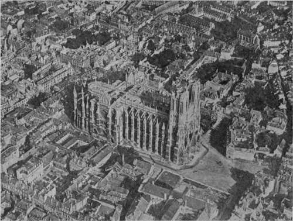Fig. 188. - Rheims Cathedral.
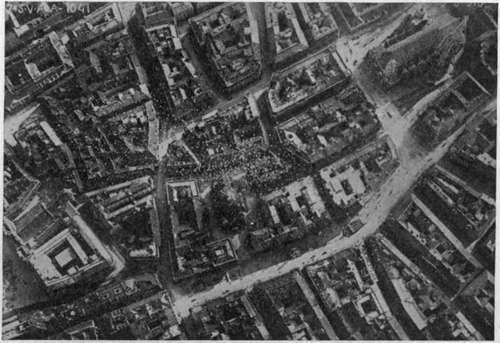Fig. 189. - A portion of Vienna seen from the air, during a "propaganda raid." Italian official photograph.
A vertical aerial photograph is most closely akin to a map, but has advantages over any ordinary surveyor's product. As a guide it is infinitely superior to the best draftsman's diagram, for it provides a wealth of detail whereby the traveller may definitely locate himself. At a single glance he notes the objects of interest within his radius of easy travel. The guide-book of the future will therefore be incomplete without numerous aerial views, both vertical and oblique. As an illustration of the peculiar merit of the view from the air, consider the photograph of Vienna made during d'Annunzio's "propaganda" bombardment. Or the picture of the Rialto bridge (Fig. 190). No ordinary photograph from land or water suggests the central roadway and no map shows the beauty of its elevation. Both are shown here, as well as an intimate view of the arched and pillared courtyard of the Fondaco de' Tedeschi to the right.
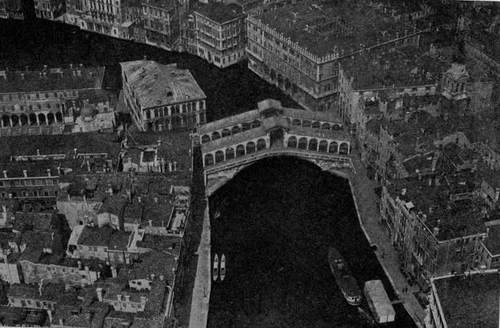Fig. 190. - The Rialto bridge, Venice.
Fig. 191. - A partly developed suburb.
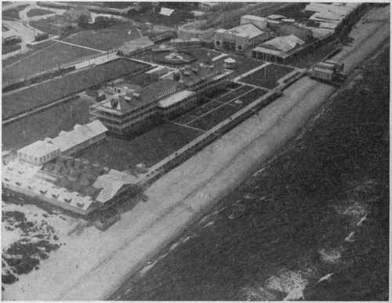Fig. 192. - A sea-side resort.
Airplane photographs will undoubtedly be widely used in certain fields of advertising. Architects and real estate agents may be expected to display their wares by the aid of aerial views. A well-planned country estate or golf course, or a suburban development (Fig. 191), can be shown with a completeness, both as to environment and stage of progress which no other form of representation can approach. A seaside resort can now show the extent and grouping of its natural and artificial amusement features in a single picture (Fig. 192). Even the extent of its bathing beach under water is revealed to the aerial photographer (Fig. 193). Real estate agents can utilize aerial photographic maps of cities to great advantage. On these their properties can be pointed out, with the nature of their surroundings shown at a glance, together with their relation to transportation, schools, churches, shopping districts, parks, or factories. The future purchaser of lots in a distant boom town will no longer be satisfied with a map outlining the streets with high-sounding names. He will demand an authentic aerial photograph, showing the actual number of houses under construction, the streets, gutters and sidewalks already laid, the size and planting of trees.
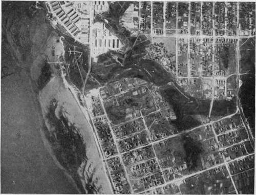Fig. 193. - A bathing beach seen from the air.
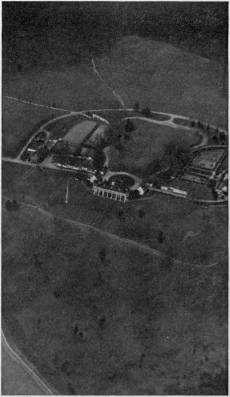Fig. 194. - Mt. Vernon from the air.
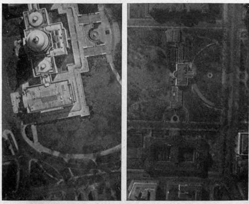Fig. 195. - A contrast in roofs. The Capitol retains its individuality,.while the White House loses all character when seen from above.
The study of landscape gardening is another field for which the aerial photograph is peculiarly fitted. A collection of oblique pictures of the chateaux and palaces of Europe showing their approaches and grounds, or of the historic estates of our own South, (Fig. 194), will be worth more to the prospective designer of a country estate than maps and ground pictures can ever be. Closely allied to landscape gardening is city planning, for which the aerial map will be quite indispensable. The appearance of a city from the air may indeed become a matter of pride to its inhabitants, and not only the arrangement of streets and parks, but even the character of the roofs of the buildings, be the subject of study (Fig. 195).
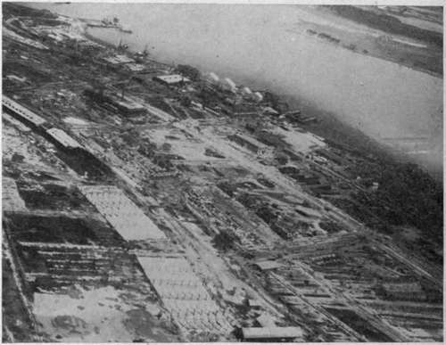Fig. 196. - An aviation field under construction; early stage.
Engineers and constructors will depend more and more on preliminary photographic surveys as a basis for locating their operations. At the later stages of their work they will use aerial photographs for recording progress. Periodic photographs of buildings in process of construction, such as are now made from the ground, are much more illustrative when made from the air. Only from above is it possible to obtain in a single picture the progress of the complete project, who require the most minute information on the characteristics of buildings in every neighborhood, and on the extent and nature of damage done. Marine insurance companies might with profit use the airplane camera to help estimate the chances of salvage of a stranded ship or a vessel foundered in shallow waters (Fig. 181).
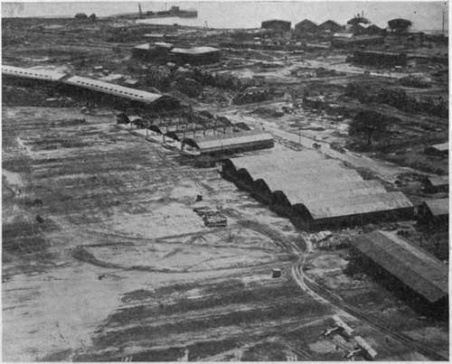Fig. 197. - An aviation field under construction; later stage.
News events will soon call for an aerial photographic service. Already we are seeing newspapers and magazines featuring aerial photographs of the entry into conquered cities and the parades of returning fleets. Accidents, fires, floods and wrecks, of either local or national interest, can best be represented by this newest form of photography.
The photographing of wrecks, fires and floods suggests the importance of aerial views to insurance underwriters, such as the construction of an aviation field (Figs. 196 and 197) or of a shipyard. The building of large structures:— bridges, hotels, ships on the stocks—particularly demands aerial views if the foreground is not to eclipse the center of real interest.
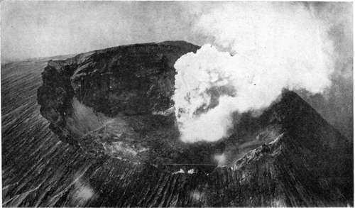Fig. 198. - The crater of Vesuvius. Photograph by Royal Italian Air Service.
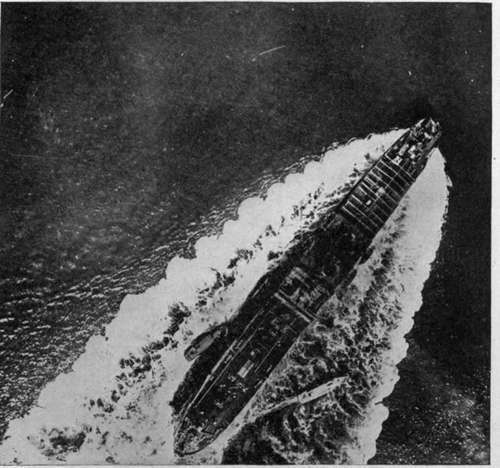Fig. 199. - Waves set up by a ship—of interest to the naval architect.
Numerous scientific uses for aerial views seem likely. Prominent among these is their use in geology, for the study of the various forms of earth sculpture. Pictures from the air of extinct volcanoes will give information as to their configuration that would otherwise require months of painstaking survey to obtain. Aerial photographs of active volcanoes (Fig. 198), showing the results of a succession of outbursts—one obliterating the other—would prove of the greatest value, especially when studied in conjunction with other scientific data, the whole making a record unobtainable by any other means.
In earthquake regions—notably Southern Italy and Japan—the changing coast lines, shallows and safe harbors, could be promptly ascertained after the subsidence of each fresh shock, with a consequent keeping open of trade routes and often the saving of life. River courses, glacier formations, canons, and all the larger natural formations which man usually sees only in minute sections, and which he must build up in his mind's eye or by models, are today quickly and accurately recorded by the camera in the air. Such formations as coral reefs, whose configurations can now be accurately learned only by laborious surveys of a limited number, could be studied in quantity and with heretofore unknown satisfaction as the result of a single expedition with a ship-carrying seaplane and aerial camera.
Another scientific field—probably one of many similar ones—lies in the study of the waves set up by ships (Fig. 199). These are of extreme importance in the realm of naval architecture, but before the day of the airplane could never be easily studied in full scale.
Continue to:
- prev: VII. The Future Of Aerial Photography. Chapter XXXI. Future Developments In Apparatus And Methods
- Table of Contents
- next: Chapter XXXIII. Exploration And Mapping
Tags
camera, lens, airplane, aerial, film, exposure, photography, maps, birdseye